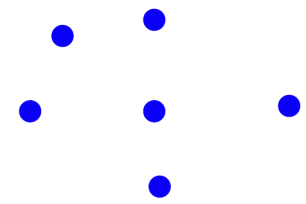
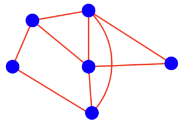
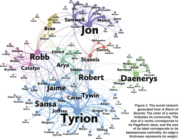
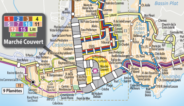
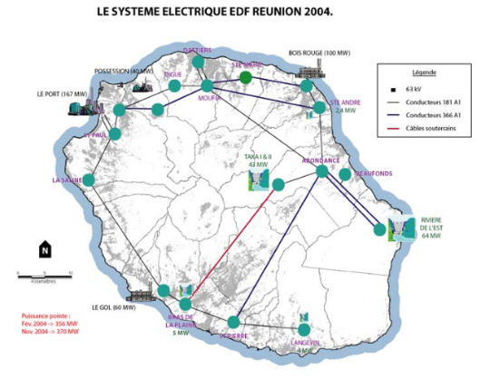
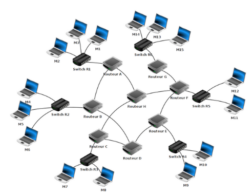
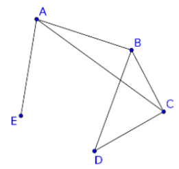
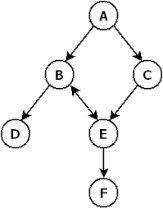

INTRODUCTION AUX GRAPHES¶
Qu’est-ce qu’un graphe ?¶
Un graphe est un couple composé d’un ensemble de sommets …

… et d’un ensemble d’arêtes qui représentent des relations entre ces sommets.

De façon plus formelle, un graphe est un couple \(G=(S, A)\) composé:
d’un ensemble fini de sommets \(S\), parfois appelés noeuds;
d’un ensemble fini d’arêtes \(A\) reliant des sommets.
Remarque: la notation anglo-saxonne \(G=(V, E)\) est souvent rencontrée, \(V\) est mis pour vertices et \(E\) pour edges.
A quoi sert un graphe ?¶
Un graphe sert à représenter des relations entre des éléments. Ses applications sont très nombreuses. Il est particulièrement adapté pour représenter des réseaux.
Exemple d’un réseau social¶

Ici les sommets sont des personnes et la présence d’une arête indique un lien entre ces personnes.
Exemple d’un réseau de bus¶

Ici les sommets sont des arrêts de bus et les arêtes représentent la relation “permet d’accéder à l’arrêt …”
Exemple d’un réseau électrique¶

Ici les sommets sont des postes de transformation haute tension et les arêtes la relation “alimente ..”
Exemple de réseau informatique¶

Ici les sommets sont des machines et les arêtes la relation “est relié à …”.
Exercice d’application directe¶
Soit un réseau social composé de 6 personnes (A, B, C, D, E et F). Donner un représentation de ce réseau, sachant que les relations entre les divers abonnés sont les suivantes:
A est ami avec B, C et D
B est ami avec A et D
C est ami avec A, E et D
D est ami avec tous les autres
E est ami avec C, D et F
F est ami avec E et D
Quelques définitions¶
Les graphes non orientés¶
Aucun sens n’est privilégié pour la liaison entre deux sommets.
Voisinage
Deux sommets \(u\) et \(v\) sont adjacents si ils sont reliés par une arête. L’ensemble des sommets adjacents à \(u\) constitue les voisins de ce dernier.
Chaîne
Une chaîne est une suite finie d’arêtes consécutives.
Cycle
Un cycle est une chaîne dont le sommet de départ est identique au sommet d’arrivée.
Application directe 1

Citer:
une chaîne,
un cycle
appartenant au graphe ci-dessus.
D est-il un voisin de E?
Les graphes orientés¶
Lorsque la modélisation nécessite un sens bien déterminé pour aller d’un sommet à un autre, on parle de graphe orienté. La liaison entre deux sommets est alors appelée arc.
Encore une fois, on peut citer en exemple les réseaux sociaux. En effet, par exemple pour Facebook si A est ami avec B alors B est aussi ami avec A alors que sur Twitter A peut suivre B qui ne suit pas forcément A.
Chemin
Un chemin est une suite finie d’arcs consécutifs sur un graphe orienté.
Exemple de représentation d’une graphe orienté

Dans un graphe orienté, il est commode de traiter les voisins en terme de successeur/prédécesseur. Ainsi, A est le prédécesseur de C, D est un successeur de B, etc.
Voisinage
Un sommet \(v\) est adjacent à un sommet \(u\) si il existe un arc allant de \(u\) à \(v\). On dit encore que \(v\) est un voisin de \(u\).
Application directe 2
Représenter le graphe modélisant le réseau routier urbain ayant les caractéristiques suivantes:
Intersections: A, B, C, D, E, F, G
il existe une liaison à double sens entre A et C;
il existe une liaison à sens unique B->A entre A et B;
il existe une liaison à sens unique A->D entre A et D;
il existe une liaison à sens unique B->F entre B et F;
il existe une liaison à sens unique E->B entre B et E;
il existe une liaison à double sens entre B et G;
il existe une liaison à double sens entre D et G;
il existe une liaison à double sens entre E et F.
Comment représenter un graphe?¶
On distingue deux grands types de représentation:
utilisation d’une matrice d’adjacence;
utilisation(s) liste(s) de successeurs / prédécesseurs.
Détaillons ces deux modes de représentation.
Représentation avec une matrice d’adjacence¶
Il s’agit d’un tableau à double entrées. Ces dernières représentent les sommets. À chaque intersection ligne \(i\) - colonne \(j\) (ligne \(i\) correspond au sommet \(i\) et colonne \(j\) correspond au sommet \(j\)), on place un 1 s’il existe une arête entre le sommet \(i\) et le sommet \(j\), et un 0 s’il n’existe pas d’arête entre le sommet \(i\) et le sommet \(j\).
Exemple¶
A |
B |
C |
D |
E |
|
|---|---|---|---|---|---|
A |
0 |
1 |
1 |
0 |
1 |
B |
1 |
0 |
1 |
1 |
0 |
C |
1 |
1 |
0 |
1 |
0 |
D |
0 |
1 |
1 |
0 |
0 |
E |
1 |
0 |
0 |
0 |
0 |
En pratique, on va ommettre l’écriture des sommets et écrire la matrice d’adjacence de la manière suivante:
Cas des graphes orientés¶
On procède de la même manière en faisant attention au sens de parcours des arcs.
Application directe 4¶
Donner la matrice d’adjacence du graphe orienté déjà rencontré précédemment:
Représentation par liste d’adjacence¶
Il s’agit dans ce cas de représenter chaque sommet et à associer chacun d’eux à la liste de ses voisins dans le cas d’un graphe non orienté ou la liste de ses successeurs ou prédécesseurs dans le cas d’un graphe orienté.
Exemples¶
Le graphe non orienté de l’application directe 3 peut être représenté par sa liste d’adjacence:
Sommet |
Voisins |
|
|---|---|---|
R |
–> |
[U, T] |
S |
–> |
[V, U] |
T |
–> |
[R, V] |
U |
–> |
[R, S] |
V |
–> |
[S, T] |
Quant au graphe orienté de l’application directe 4, on peut le représenter par une liste de successeurs:
Sommet |
Succ |
|
|---|---|---|
A |
–> |
[B, C] |
B |
–> |
[D, E] |
D |
–> |
[ ] |
C |
–> |
[E] |
E |
–> |
[B, F] |
F |
–> |
[ ] |
Application directe 5¶
Représenter le graphe de l’application directe 1 par une liste d’adjacence et celui de l’application directe 4 par une liste de prédécesseurs.
Choix du mode de représentation¶
Le choix dépend du type de graphe (dense ou pas), des algorithmes. Par ailleurs, on montrera en séance d’exrcices qu’il est possible de passer d’une représentation à l’autre.